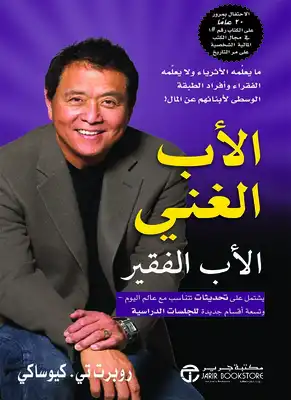

1-كتاب الأب الفقير و الأب الغني

يعتبر كتاب الأب الغني والأب الفقير من أنجح أعمال الكاتب الأمريكي روبرت كيوساكي، حيث يتطرق الكتاب لأهمية الإستقلال المالي و بناء الثروة ، مقدما العديد من الحلول و الإقتراحات الفعالة و الناجحة لذلك، كالإستثمار في رأس المال أو البدأ بمشروع تجاري بسيط و جعله يكبر و ينمو ، حتى تصل لمرحلة الإستقلال المالي و تبدأ في تكوين ثروتك الخاصة و تنمية ذكائك المالي و حسك التجاري.
من جهة أخرى، يعتبر كتاب الأب الغني والأب الفقير ، من بين أنجح و أبرز الكتب التي تقدم معلومات و نصائح قيمة، عن ما لم يقم الأباء بتعليمه لأبنائهم و خاصة الأثرياء منهم للمحافظة على ثروة العائلة و جعلها تنمو و تكبر.
يعتبر كتاب الأب الغني الأب الفقير من أكثر الكتب مبيعًا في العالم، حيث حقق الكتاب انتشار كبير جدًا على مستوى العالم، وترجم لمعظم لغات العالم.
ستتعلم في كتاب الأب الغني الأب الفقير ما يعلِّمه الأثرياء ولا يعلِّمه الفقراء وأفراد الطبقة الوسطى لأبنائهم عن المال. حيث أن هذا الكتاب يعٌد من أفضل الكتب التي تحدثت عن المال بشكل عام لمؤلفه روبرت كيوساكي.
2-كتاب قانون الجدب
قبل الحديث عن ملخص كتاب السر سيتم التطرق للحديث عن مصطلح قانون الجذب حيث يمكن تعريف هذا المصطلح في فلسفة الفكر الجديد بانه الاعتقاد والايمان بان الافكار سواء كانت ايجابية او سلبية تستطيع جلب تجارب ايجابية او سلبية في حياة الاشخاص وهذا الاعتقاد يستند اصحابه الى فكرة وهي ان جميع الناس وافكارهم مصنوعةٌ من طاقة نقية وبان الطاقة تجذب الطاقة ومن خلال ذلك يمكن للشخص ان يقوم بتحسين ما يريد تحسينه في حياته كصحته او ثروته وغير ذلك وبمعنى آخر فان قوة افكار كل شخص لها قدرة جذب كبيرة جدا ولذلك اذا فكر اي شخص في شيء معين او موقف سلبي مثلا يمكن ان يجذبها نحوه وكلما فكر الشخص او تمنى او حلم وتخيل اشياء جميلة وجيدة يريد ان يحققها في حياته فان هذه الافكار الايجابية يمكن ان تجذب له كل ما اراد تحقيقه
عتبر كتاب السر من أكثر الكتب مبيعًا على مستوى العالم، فهو كتاب مرشح بقوة ليكون من أهم قائمة كتب يجب قراءتها.
وهو من تأليف الكاتب روندا بايرن، وتم ترجمته إلى عدة لغات منها اللغة العربية وحقق نجاحًا كبيرًا في مصر إذ أنه من أفضل الكتب الثقافية الممتعة التي يمكن أن تغير حياة القارئ بشكل جذري. حيث أن الكتاب يتناول موضوع كيف يجعل الشخص حياته أفضل سواء في الأكل أو الأمل أو العلم أو السعادة وبالكتاب مفاتيح للسعادة وأدوات للمساعدة على جعل الحياة أفضل.
3-كتاب قوّة الآن
قوّة الآن (بالإنجليزية: The Power of Now) دليل التنوير الروحي هو كتاب للكاتب إيكهارت تول، يهدف الكتاب لأن يكون دليلاً للحياة اليومية ويشدد على أهمية العيش في اللحظة الحالية وتجاوز أفكار الماضي والمستقبل بصورة مختلفة عن المعنى المتداول لعيش اللحظة الآنية المتمثل بالانغماس في الحياة والاستمتاع بها.
نُشر الكتاب في أواخر التسعينيات وقد أوصت به أوبرا وينفري وتمت ترجمته إلى 33 لغة من بينها العربية ،واستناداً إلى بيانات عام 2009 فقد تم بيع ثلاثة ملايين نسخة في أمريكا الشمالية وحدها.
الكتاب الأكثر مبيعًا لدى نيويورك تايمز، يعتبر كتاب قوة الآن الدليل إلى التنوير الروحي، حيث أنه من أفضل وأعمق الكتب التي تحدثت عن التنوير والأنا، والفرق بين الأنا الحقيقية والأنا الوهمية، وقوة الصمت.
كما يتناول إيكهارت تول كيفية الوصول للتنوير والحقيقة وأنهم موجودون بداخلنا.
4-كتاب فكر كيف تصبح غنيًا
كتاب فكر تصبح غنيا لـ نابليون هيل ، من الكتب التحفيزية وهو من النوع الذي يندرج تحت التنمية الإيحائية
فهو يعمل على تطوير الذات لتحقيق الهدف الناجح وكيف يتم إنتهاز الفرصة المناسبة لفعل ذلك
ويتبنى الكتاب فلسفة الإنجاز الفردي، وقد تم تصنيف هذا الكتاب من ضمن الكتب الأكثر بيعاً حول العالم.
لكتاب فكر تصبح غنيا أو ثريا كما في بعض الطبعات شعبية كبيرة جداً في الدول الأوروبية
وقد نُشر الكتاب للمرة الأولى في أوائل القرن الماضي وبالتحديد في عام 37
وقد حقق الكتاب منذ اللحظة الأولى من صدوره نجاح منقطع النظير فقد تم بيع أكثر من ثلاثون مليون نسخة حول العالم
ويعتبره علماء الإقتصاد هو الفجر الذي أضاء للملايين طريقهم لكي يبنوا ثروتهم بكل سهولة ويسر.
والجدير بالذكر أن نابليون هيل أوضح بشكل مؤكد في آخر كتابه أن الغنى ليس فقط بإمتلاك المال
ولكن بالنجاح في إمتلاك ما تريد سواء مال أو الحفاظ على شئ تحبه أو أشياء كثيرة من شأنها أن تحقق لك.
» اقرأ أيضاً لمزيد من الإفادة: كتاب أغنى رجل في بابل لـ جورج كلاسون
وهو من افضل كتب العالم التي تم ترجمتها إلى لغات عديدة وقام بتأليفه الكاتب نابليون هل، وغير هذا الكتاب الكثير في مفاهيم البعض، حيث أن الكتاب غرضه التحفيز والدعم وتطوير الذات.معلومات